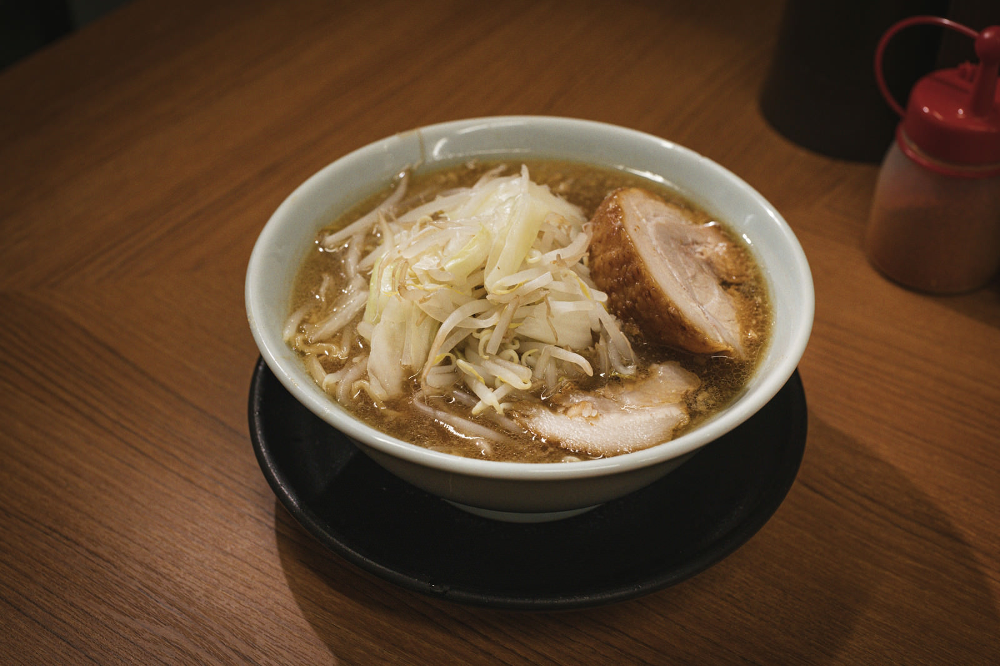
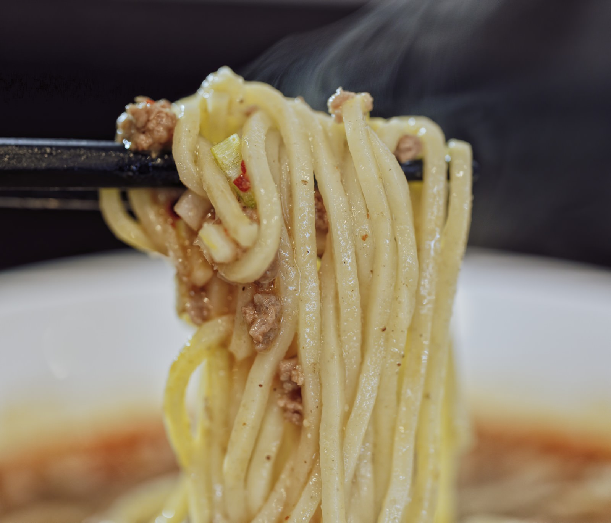
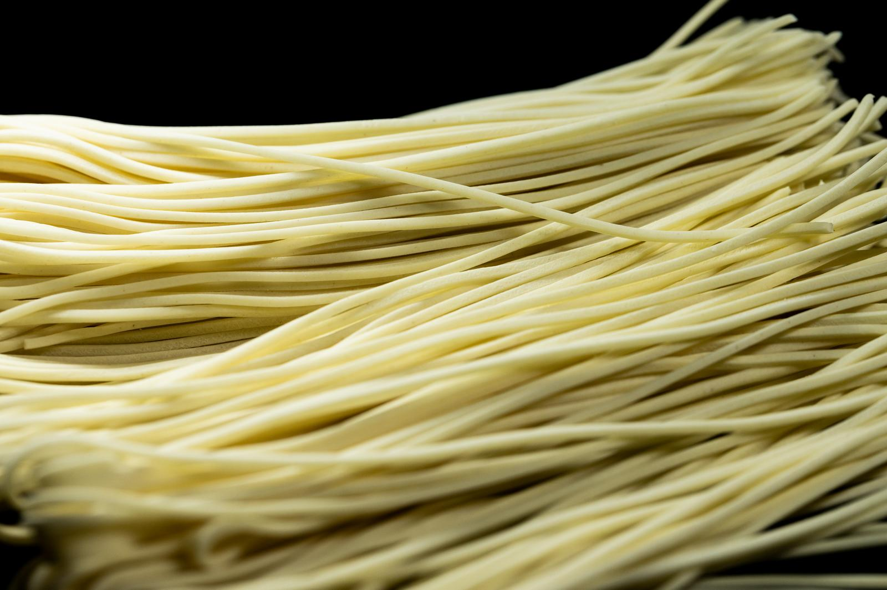
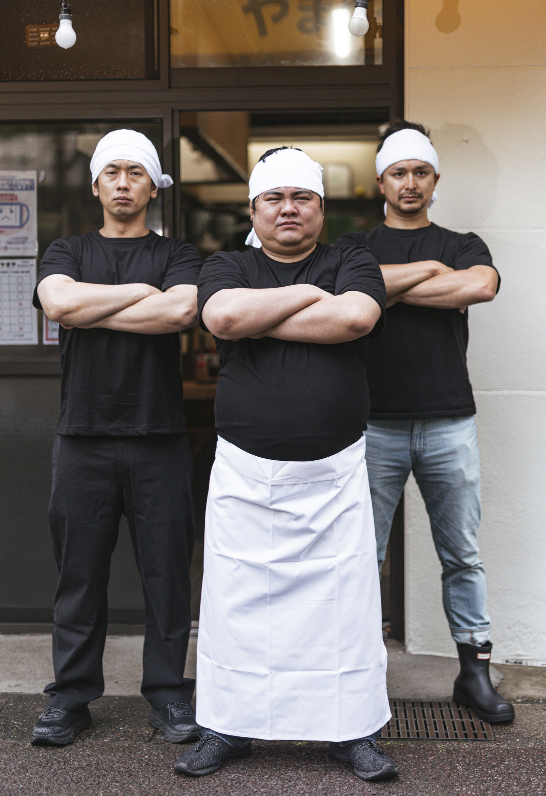
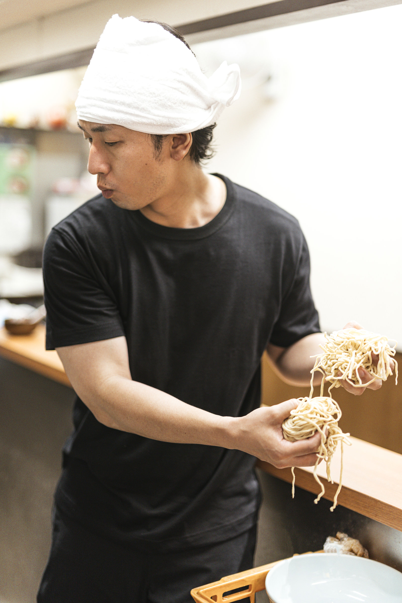
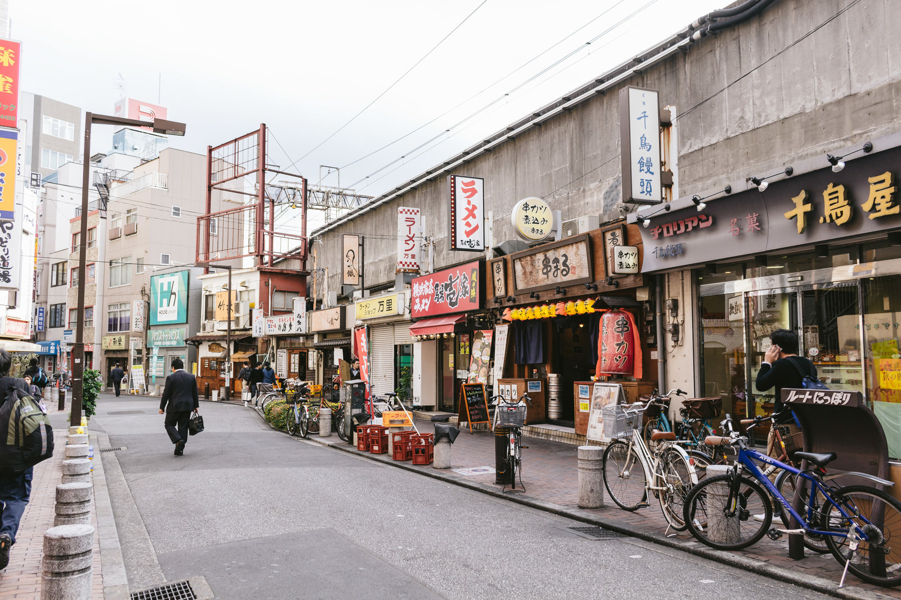

豚骨を炊き込んだ濃厚な醤油スープに、もっちり食べ応えのある自家製の極太麺。流行りも小細工もいらない。うまいと言わせる一杯を、湯気の立つうちに。
難しいことはしない。ただ、手は抜かない。
大量の豚骨を強火で炊き上げ、かえしの醤油とぶつける。濃いのに後を引く、丸屋の背骨となる一杯です。
毎日店で打つ、食べ応えのある極太麺。スープをしっかり持ち上げる、丸屋のためだけの麺です。硬さもお好みで。
創業からブレない看板の味。お好み（味の濃さ・脂・麺の硬さ）は無料で調整。券売機は入口すぐ、初めてでも迷いません。
ご注文は入口の券売機で。（表示は税込）



※ 上記は代表的なお品書きです。日替わりの限定や季節メニューは店頭の券売機・黒板にてご案内します。
写真をタップすると大きく表示されます。



下町の通り沿い。テイクアウト・出前もやってます。
湯気の立つうちが、いちばん旨い。